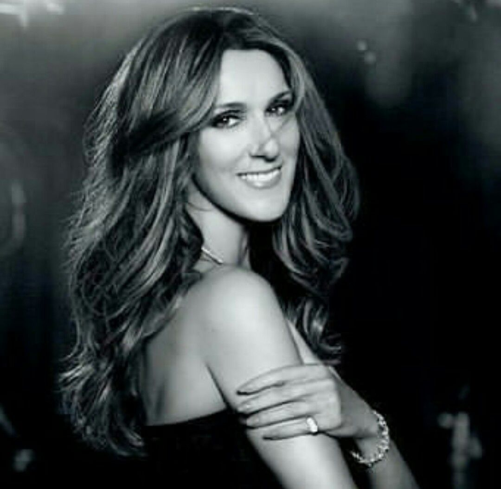

BIOGRAGHIE
Céline Dion, née le 30 mars 1968 à Charlemagne (Québec), est une chanteuse canadienne. Dernière d'une famille de quatorze enfants, elle connaît un succès presque immédiat dans sa province d'origine, le Québec, dès 1981 avec la chanson Ce n'était qu'un rêve. Une série d'albums francophones, dans les années 1980, consolide sa popularité, alors que le titre D'amour ou d'amitié (1983) lui vaut une première exposition en France. Elle étend sa renommée en gagnant le Concours Eurovision de la chanson en 1988 durant lequel elle représente la Suisse avec la chanson Ne partez pas sans moi.

Dans les années 1990, elle atteint une célébrité planétaire, produisant notamment deux albums qui figurent parmi les plus vendus de l'histoire de l'industrie musicale, Falling into You (1996) et Let's Talk About Love (1997), écoulés chacun à plus de 30 millions d'exemplaires à travers le monde.
Elle enregistre plusieurs grands succès internationaux qui culminent avec My Heart Will Go On, chanson titre du film Titanic de James Cameron en 1997. Elle continue parallèlement à produire des albums en français destinés aux marchés francophones et marqués par une fructueuse collaboration avec Jean-Jacques Goldman, qui conduit notamment à l'album D'eux (1995), album francophone le plus vendu en France et dans le monde, et S'il suffisait d'aimer (1998).